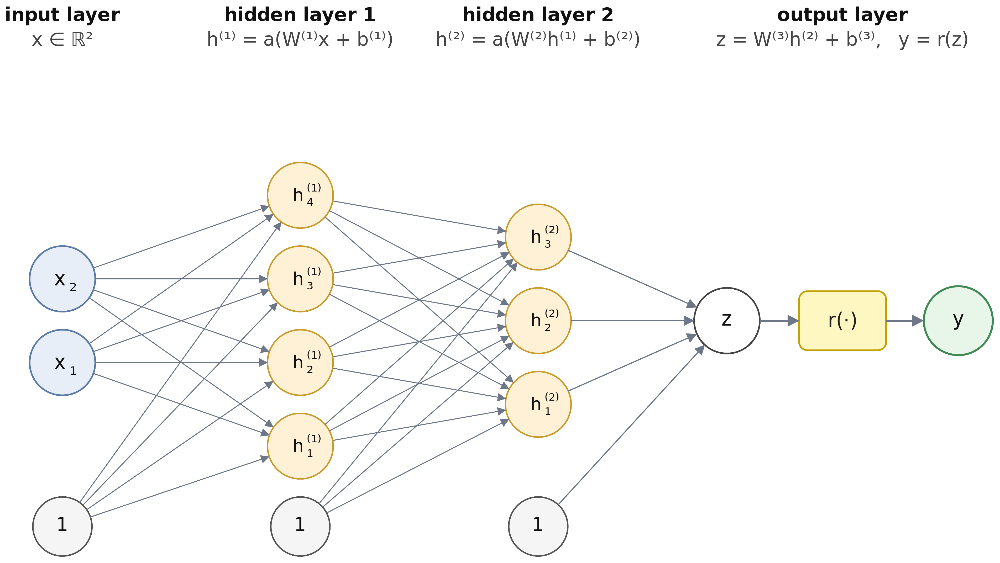
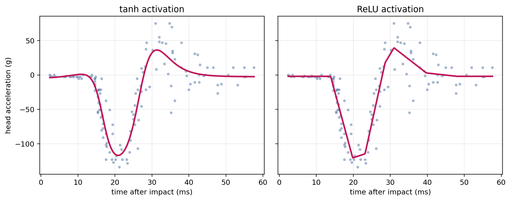

15 Neural Networks
This chapter introduces neural networks and develops their application to survival analysis. We begin with feed-forward neural networks for regression: their architecture (layers, activations, response functions), optimization (gradient descent, backpropagation), and the progression from deterministic point prediction to probabilistic distributional regression, where the network outputs the parameters of an assumed conditional distribution. We then show that adapting neural networks to survival analysis requires no fundamental change to the architecture; it is sufficient to replace the regression loss with a survival-specific objective. Two strategies are developed in detail. A parametric strategy lets the network predict the parameters of a time-to-event distribution (illustrated with a Weibull AFT example on the tumor data). A semi-parametric Cox-based strategy replaces the linear predictor with a neural network. The chapter closes with a brief overview of reduction-based deep-survival methods, which transform the survival task into a standard regression or classification problem.
This page is a work in progress and major changes will be made over time.
Neural networks are a flexible class of models that, with enough hidden units, can approximate any sufficiently smooth function (Hornik et al. 1989; Hornik 1991). General introductions are given in LeCun et al. (2015), Goodfellow et al. (2016) and Prince (2023). Beyond the basic feed-forward network, a variety of architectures have been proposed, including convolutional neural networks (CNNs) (LeCun et al. 1998; Krizhevsky et al. 2012), recurrent neural networks (RNNs) (Hochreiter and Schmidhuber 1997), and transformers (Vaswani et al. 2017).
For the purposes of this chapter, the precise architecture is largely orthogonal to the survival adaptation: all of these models share the same mathematical backbone that consists of compositions of linear maps (Section 15.1) combined with non-linear activations (Section 15.1.1), trained by minimizing a differentiable loss with (stochastic) gradient descent (Section 15.1.2). The adaptation to survival analysis acts (mostly) on the loss, not on the architecture. We therefore introduce the basics in terms of the simplest variant, the feed-forward neural network.
15.1 Neural Networks for Regression
We introduce neural networks in the simplest supervised-learning setting: predicting a continuous response \(y_i \in \mathbb{R}\) from a covariate vector \(\mathbf{x}_i \in \mathbb{R}^p\), given \(n\) training observations \(\mathcal{D}_{train}= \{(\mathbf{x}_i, y_i)\}_{i=1}^n\). In general, neural networks can be viewed as computation graphs (usually directed acyclic graphs) that transform the input through a sequence of differentiable operations to produce the output.
Figure 15.1 shows a specific neural network architecture, the feed-forward neural network (FFNN). The inputs (features) are denoted by \(x \in \mathbf{x}\). Here there are two inputs and one intercept term. Arrows indicate operations that are applied to the input to produce the output from left to right. The final layer is referred to as the output layer. The layers between input and output layer are called hidden layers, and each unit in the hidden layer is referred to as a hidden unit. In each step, the inputs are multiplied with scalar weights and summed up, then transformed through a known activation function (see Section 15.1.1), denoted by \(a^{(l)}(\cdot)\), where the superscript \((l)\) indexes the layer. Concretely, the \(j\)th hidden unit of the first layer is given by \[ h_j^{(1)} = a^{(1)}\!\left(b_j^{(1)} + w_{j,1}^{(1)} x_1 + w_{j,2}^{(1)} x_2\right), \quad j = 1, \ldots, 4, \] where the scalars \(w_{j,k}^{(1)}\) are called weights (coefficients) and \(b_j^{(1)}\) are the biases (intercepts). In Figure 15.1 both are edges in the graph. The weights connect the feature inputs \(x_k\) to the hidden units, and the biases connect the constant bias node (\(1\)) to the hidden units. Collecting them into vectors and matrices, \[ \mathbf{x}= \begin{pmatrix} x_1 \\ x_2 \end{pmatrix}, \qquad \mathbf{b}^{(1)} = \begin{pmatrix} b_1^{(1)} \\ b_2^{(1)} \\ b_3^{(1)} \\ b_4^{(1)} \end{pmatrix}, \qquad \mathbf{W}^{(1)} = \begin{pmatrix} w_{1,1}^{(1)} & w_{1,2}^{(1)} \\ w_{2,1}^{(1)} & w_{2,2}^{(1)} \\ w_{3,1}^{(1)} & w_{3,2}^{(1)} \\ w_{4,1}^{(1)} & w_{4,2}^{(1)} \end{pmatrix}, \] the entire first hidden layer, collected into the vector \(\mathbf{h}^{(1)} = \bigl(h_1^{(1)}, \ldots, h_4^{(1)}\bigr)^\top\), can be written compactly as \[ \mathbf{h}^{(1)} = a^{(1)}\!\left(\mathbf{b}^{(1)} + \mathbf{W}^{(1)} \mathbf{x}\right) \in \mathbb{R}^4, \] with \(a^{(1)}\) applied element-wise.

Putting everything together, the FFNN is defined by the recursion
\[ \begin{aligned} \mathbf{h}^{(0)} &= \mathbf{x}\\ \mathbf{h}^{(l)} &= a^{(l)}\!\left(\mathbf{W}^{(l)}\mathbf{h}^{(l-1)} + \mathbf{b}^{(l)}\right), \quad l = 1, \ldots, L \\ z &= \mathbf{W}^{(L+1)}\mathbf{h}^{(L)} + \mathbf{b}^{(L+1)} \\ g(\mathbf{x}\mid \boldsymbol{\theta}) &= r(z) = y, \end{aligned} \tag{15.1}\] where \(\mathbf{W}^{(l)}\) and \(\mathbf{b}^{(l)}\) are the weight matrix and bias vector of layer \(l\), \(a^{(l)}\) is the layer’s activation function, and \(L\) is the number of hidden layers (so the network has \(L+1\) weight layers in total). \(\boldsymbol{\theta}= \{\mathbf{W}^{(l)}, \mathbf{b}^{(l)}\}_{l=1}^{L+1}\) collects all trainable parameters. \(r(\,\cdot\,)\) is an (optional) output response function (Section 15.1.1).
15.1.1 Activations and response functions
Both activation functions and response functions are known, prespecified functions that are fixed before training. The same functions could serve as both, activation and response function, but they serve different purposes and are usually chosen independently of each other. Table 15.1 lists common activation and response functions used in practice.
Activation functions
Hidden activation is a modelling choice. The default choice for hidden layers is the rectified linear unit (ReLU) (Nair and Hinton 2010) because of its computational simplicity and favorable gradient properties. Each ReLU unit is piecewise linear, so a ReLU network produces a piecewise-linear function whose number of breakpoints is bounded by the number of hidden units. A tanh network of the same size produces smoother curves (see example in Figure 15.2 below). Smooth ReLU-like alternatives such as GELU (Hendrycks and Gimpel 2016) and SiLU/Swish (Ramachandran et al. 2017) are now standard in modern architectures: GELU is the default hidden activation in transformer language models (BERT, GPT) and SiLU dominates recent CNNs (EfficientNet) and large language models (LLaMA, Mistral).
Response functions
The response function controls the range of the output and is usually dictated by the application rather than by computational considerations. The identity \(r(z) = z\) produces an unconstrained continuous prediction (the default for standard regression), while non-trivial choices map the unbounded \(z\) into the range required by the prediction target (for example, a predicted probability needs to lie in \((0,1)\)). In the deep-learning literature \(r(\,\cdot\,)\) is more commonly referred to as the output activation and treated terminologically on the same footing as the hidden activations \(a^{(l)}\). Here we deliberately use “response function” to emphasize its different role.
Common examples of \(r(\,\cdot\,)\) are:
- sigmoid for binary classification: outcome is a probability in \((0,1)\);
- softmax for multi-class classification: outcome is a probability vector over \(K\) classes (e.g. for predicting the class of an image), \(r(\mathbf{z})_k = e^{z_k}/\sum_{j=1}^{K}e^{z_j}\), where \(\mathbf{z} \in \mathbb{R}^K\) is the vector of unconstrained outputs from the last layer;
- softplus or exponential for non-negative outcomes (for example income).
| Name | Definition | Range | Shape |
|---|---|---|---|
| ReLU | \(a(v) = \max(0, v)\) | \([0, \infty)\) |  |
| GELU | \(a(v) = \tfrac{v}{2}\bigl[1 + \operatorname{erf}(v/\sqrt{2})\bigr]\) | \(\approx [-0.17, \infty)\) |  |
| SiLU | \(a(v) = v / (1 + e^{-v})\) | \(\approx [-0.28, \infty)\) |  |
| Tanh | \(a(v) = \frac{e^v - e^{-v}}{e^v + e^{-v}}\) | \((-1, 1)\) |  |
| Sigmoid | \(a(v) = \frac{1}{1 + e^{-v}}\) | \((0, 1)\) |  |
| Softplus | \(a(v) = \log(1 + e^v)\) | \((0, \infty)\) |  |
15.1.2 Optimization
Equations (15.1) define a neural network, but in order to fit the model to data we need to choose the parameters \(\boldsymbol{\theta}\) to minimize a loss function \(L(\boldsymbol{\theta})\) so that \[ \hat{\boldsymbol{\theta}} \;=\; \mathop{\mathrm{arg\,min}}_{\boldsymbol{\theta}}\, L(\boldsymbol{\theta}). \tag{15.2}\] For a linear model this objective has a closed-form minimum (the ordinary-least-squares (OLS) normal equations); for an FFNN, even a shallow one, it does not, and \(\hat{\boldsymbol{\theta}}\) has to be found iteratively by gradient descent, which was introduced as a general optimization principle in Section 2.6. The loss decomposes into per-observation terms, \(L(\boldsymbol{\theta}) = \tfrac{1}{n}\sum_{i=1}^{n} \ell_i(\boldsymbol{\theta})\), where each \(\ell_i(\boldsymbol{\theta}) = \ell\bigl(y_i,\, g(\mathbf{x}_i \mid \boldsymbol{\theta})\bigr)\) compares the network’s prediction \(g(\mathbf{x}_i \mid \boldsymbol{\theta})\) from (15.1) to the observed target \(y_i\) (for the squared-error loss, \(\ell_i(\boldsymbol{\theta}) = (y_i - g(\mathbf{x}_i \mid \boldsymbol{\theta}))^2\)). A full training run is summarised in Algorithm 1.
The update rule in Step 5 is exactly (2.2) (when \(\mathcal{U}\) is plain gradient descent), only now \(\boldsymbol{\theta}\) collects the weights and biases of all layers of the network rather than the two parameters of a linear regression. The genuinely new ingredient compared to the linear case is Step 4. The gradient \(\nabla_{\boldsymbol{\theta}} L\) can in principle still be written down in closed form, but deriving it by hand parameter by parameter becomes extremely tedious and error-prone as the network grows in depth and width — feasible for small networks, impractical at scale. Backpropagation computes it efficiently by reusing intermediate quantities, and automatic differentiation removes the need to derive it by hand at all. The user specifies only the forward pass, and the gradient with respect to every trainable parameter is obtained “for free”.
The two pieces of Algorithm 1 that are commonly modified in practice are the gradient estimate used in Steps 3–4 (replacing the full-batch sum by an estimate on a small random subset of the data) and the optimizer \(\mathcal{U}\) in Step 5 (replacing plain gradient descent by an adaptive variant). We describe both in turn.
Stochastic gradient descent and mini-batching
In Steps 3–4 of Algorithm 1 the full-batch gradient \[ \nabla_{\boldsymbol{\theta}} L(\boldsymbol{\theta}) \;=\; \frac{1}{n}\sum_{i=1}^{n} \nabla_{\boldsymbol{\theta}}\,\ell_i(\boldsymbol{\theta}) \] is evaluated by summing over the entire training set. This requires one forward and one backward pass through all \(n\) observations for each parameter update. For the dataset sizes typical in modern deep learning this is prohibitively expensive. Even when it is feasible, full-batch updates turn out to be suboptimal in practice.
In Steps 3–4, NNs are therefore typically trained in mini-batches: the full-batch loss \(L(\boldsymbol{\theta})\) is replaced by a mini-batch loss computed on a small random subset \(\mathcal{B}_t \subset \{1, \ldots, n\}\) of fixed size \(|\mathcal{B}_t| = B\), \[ L_{\mathcal{B}_t}(\boldsymbol{\theta}) \;=\; \frac{1}{B}\sum_{i \in \mathcal{B}_t} \ell_i(\boldsymbol{\theta}), \qquad \nabla_{\boldsymbol{\theta}} L_{\mathcal{B}_t}(\boldsymbol{\theta}^{t}) \;=\; \frac{1}{B}\sum_{i \in \mathcal{B}_t}\nabla_{\boldsymbol{\theta}}\,\ell_i(\boldsymbol{\theta}^{t}), \tag{15.3}\] and Steps 3–4 of Algorithm 1 use \(L_{\mathcal{B}_t}(\boldsymbol{\theta}^{t})\) and \(\boldsymbol{\gamma}^{t} = \nabla_{\boldsymbol{\theta}} L_{\mathcal{B}_t}(\boldsymbol{\theta}^{t})\) in place of \(L(\boldsymbol{\theta}^{t})\) and \(\nabla_{\boldsymbol{\theta}} L(\boldsymbol{\theta}^{t})\). Min-batching has two useful effects: (i) each step is roughly \(n / B\) times cheaper than a full-batch step (particularly useful for large datasets or in case of memory constraints), and (ii) the stochasticity helps the iterates escape narrow saddle points and shallow local minima of the highly non-convex loss surface, which tends to improve generalization.
The resulting procedure is called (mini-batch) stochastic gradient descent (SGD) (Robbins and Monro 1951). Each mini-batch produces one parameter update (Step 5), so each iteration \(t\) of the outer loop in Algorithm 1 is now a single mini-batch step rather than a full pass over the data. The single loop of Algorithm 1 is therefore best read as two nested loops: an outer loop over epochs and, within each epoch, an inner loop over the \(\lceil n / B \rceil\) mini-batches that partition the (reshuffled) training set. One epoch is thus a complete pass over the training set and corresponds to \(\lceil n / B \rceil\) updates; because the mini-batches partition the data — rather than being drawn independently at random indefinitely — every observation contributes exactly once per epoch.
Adam and other adaptive optimizers
The simplest choice for the optimizer \(\mathcal{U}\) in Step 5 of Algorithm 1 is plain gradient descent, which applies the same learning rate \(\alpha\) to every parameter and uses no information from past gradients. Modern adaptive optimizers improve on this in two ways: they accumulate a running estimate of the gradient direction (momentum) and an estimate of the per-parameter gradient magnitude (scaling), and use both to adjust the effective step size on the fly. Algorithmically, this only changes the update rule \(\mathcal{U}\) in Step 5; everything else in Algorithm 1 is unchanged.
The most widely used variant in deep learning is Adam (Kingma and Ba 2015). Adam maintains exponential moving averages of the gradient and the element-wise squared gradient, \[ \begin{aligned} \bar{\boldsymbol{\gamma}}^{t} &= \nu_1\,\bar{\boldsymbol{\gamma}}^{t-1} + (1 - \nu_1)\,\boldsymbol{\gamma}^{t},\\ \mathbf{v}^{t} &= \nu_2\,\mathbf{v}^{t-1} + (1 - \nu_2)\,(\boldsymbol{\gamma}^{t})^2, \end{aligned} \tag{15.4}\] where \(\boldsymbol{\gamma}^{t}\) is the gradient supplied to \(\mathcal{U}\) in Step 5 of Algorithm 1, \(\bar{\boldsymbol{\gamma}}^{t}\) and \(\mathbf{v}^{t}\) are the resulting exponential moving averages of the gradient and of the element-wise squared gradient \((\boldsymbol{\gamma}^{t})^2\), and \(\nu_1, \nu_2 \in [0, 1)\) are the corresponding decay rates. After a bias correction that compensates for the zero-initialization of \(\bar{\boldsymbol{\gamma}}\) and \(\mathbf{v}\) (omitted here for brevity), the parameter update is \[ \boldsymbol{\theta}^{t+1} \;=\; \boldsymbol{\theta}^{t} - \alpha\,\frac{\bar{\boldsymbol{\gamma}}^{t}}{\sqrt{\mathbf{v}^{t}} + \varepsilon}, \tag{15.5}\] where \(\varepsilon > 0\) is a small numerical-stability constant (typically \(10^{-8}\)) that prevents division by zero whenever a component \(v_j^{t}\) of \(\mathbf{v}^{t}\) is close to zero. In the notation of Algorithm 1, this corresponds to \(\mathcal{U}(\boldsymbol{\theta}, \mathbf{s}, \boldsymbol{\gamma}, \alpha)\) with state \(\mathbf{s} = (\bar{\boldsymbol{\gamma}}, \mathbf{v})\) updated according to (15.4) and \(\boldsymbol{\theta}\) updated according to (15.5).
Two effects make this update appealing in practice:
- The numerator \(\bar{\boldsymbol{\gamma}}^{t}\) is a momentum term: by averaging recent gradients, it dampens the high-frequency noise from mini-batching and accelerates descent along persistent directions.
- The denominator \(\sqrt{\mathbf{v}^{t}}\) rescales each coordinate by its own recent gradient magnitude, so parameters whose gradients are large get smaller steps and parameters whose gradients are small get larger steps. This makes Adam much less sensitive to the choice of \(\alpha\) than plain SGD and removes the need to hand-tune separate learning rates for, say, the first and last layers of a deep network.
15.1.3 Hyperparameters and practical training
In the previous section, Algorithm 1 and its mini-batch / Adam refinements were described as if the network architecture, the learning rate \(\alpha\) and other parameters outside \(\boldsymbol{\theta}\) were given. In practice they are not and how close the optimizer’s \(\hat{\boldsymbol{\theta}}\) is to the (typically unknown) optimum depends to some extent on these design choices.
Following the terminology of Section 2.3, hyperparameters control how the learner is run and are set before training rather than learned from the data. For neural networks they split into two kinds.
Structural hyperparameters define the function class that gradient descent will search. They include the choice of architecture family (FFNN, CNN, RNN, transformer, …; Section 15.1.6), the depth (number of hidden layers \(L\)) and width (number of units per layer) of the network, and the choice of hidden activations \(a^{(l)}\) and the output response function \(r\). Changing any of them changes which \(\hat{\boldsymbol{\theta}}\) is in principle reachable, much as the depth of a decision tree fixes the set of partitions the tree can express (Section 2.3).
Mathematical hyperparameters control how the loss surface of that fixed function class is traversed and how solutions on it are penalised. They include the learning rate \(\alpha\) of Algorithm 1, Adam’s decay rates \(\nu_1, \nu_2\) from (15.4), the mini-batch size \(B\) from (15.3), the number of training epochs (or, equivalently, the stopping criterion), and the regularization strengths discussed below.
Searching jointly over both groups is expensive: each candidate configuration requires a full (possibly multi-hour) training run. Neural architecture search (NAS) (Elsken et al. 2019) automates the search over the structural part using reinforcement learning, evolutionary algorithms, or gradient-based relaxations of the discrete choices, but is itself extremely compute-intensive and largely confined to settings where the same architecture will be reused many times (e.g. image classification backbones). For most applications the architecture is therefore chosen, not tuned, drawing on the families of Section 15.1.6 and on what is standard in the relevant domain. The remaining mathematical hyperparameters are then either tuned by the cross-validation procedures of Section 2.5 or set to robust defaults using the practical recipe at the end of this section.
Regularization
A complementary way to keep the hyperparameter search tractable is to deliberately over-parameterize the network so that the function class is flexible enough on its own, and to control overfitting via regularization rather than by carefully tuning capacity. Three regularization strategies are widely used.
- Weight decay adds a penalty \(\lambda\|\boldsymbol{\theta}\|_2^2\) to the loss for some \(\lambda > 0\), identical to the ridge penalty in the linear case. The penalisation strength \(\lambda\) is a mathematical hyperparameter.
- Dropout (Srivastava et al. 2014) randomly sets a fraction \(p\) of activations to zero during each training step, which can be interpreted as implicit ensembling over thinned sub-networks. The drop probability \(p\) is also a mathematical hyperparameter.
- Early stopping terminates training once a held-out validation loss stops improving (Note 3 of Algorithm 1). Unlike weight decay and dropout it adds no explicit penalty; it acts as an implicit regularizer, limiting how far the parameters move from their initialization and so restricting the network’s effective capacity.
More broadly, training an over-parameterized network with (stochastic) gradient descent carries its own implicit regularization: among the many parameter settings that fit the training data equally well, the optimization tends to favour simpler, better-generalizing ones.
Practical recipe
The number of hyperparameters that can be tuned is large, but a few defaults work well across a wide range of problems and are used as a starting point throughout the rest of this chapter:
- Use an architecture (family, depth, width) that is comfortably over-parameterized for the data at hand, rather than trying to find the smallest network that still fits.
- Couple this with weight decay and/or dropout to suppress overfitting; this trades one hyperparameter (effective capacity) for one or two regularization strengths that are typically less sensitive.
- Run an adaptive optimizer such as Adam with a small learning rate \(\alpha\) for many epochs, and rely on early stopping on a held-out validation loss to choose the effective number of epochs. Adam’s per-parameter scaling removes much of the sensitivity to \(\alpha\), so a single global learning rate tends to work for all layers, and the early-stopping criterion replaces an explicit tuning of \(T\) in Algorithm 1.
- Use standard hyperparameter tuning with nested resampling (Section 2.5) for everything else.
15.1.4 Example: Crash-test acceleration
Throughout this section we use the mcycle data (Silverman 1985) as a running example. The dataset records \(n = 133\) measurements of head acceleration (in units of \(g\)) on a helmeted dummy at successive points in time after a simulated motorcycle crash, with the time after impact (in milliseconds) as the single feature. The shape of the curve is non-monotone: a steep negative spike (deceleration) at the moment of impact, a positive rebound shortly afterwards, and a quieter tail.
Figure 15.2 shows two FFNNs using the architecture of Figure 15.1 (one input, two hidden layers of four and three units, one output) with identical optimizer settings, differing only in the choice of hidden activation. With \(\tanh\) activations (left panel) the fit is a smooth curve that captures the impact, rebound, and tail. With ReLU activations (right panel) the fit is piecewise linear: each ReLU unit contributes at most one “hinge” at the point where it switches between zero and the linear regime, so \(4 + 3 = 7\) units can produce at most seven breakpoints, and the resulting corners are clearly visible where the \(\tanh\) fit is smooth. With more hidden units the ReLU breakpoints become dense enough that its fit would also appear smooth; \(\tanh\) simply achieves a smooth fit with fewer units.

mcycle data. Both panels use the same architecture (one input, two hidden layers of four and three units, one output) and identical optimizer settings — only the hidden activation differs. Left: \(\tanh\) activations. Right: ReLU activations.
15.1.5 Deterministic and probabilistic regression
Recall from Section 2.2.1 that regression tasks can be deterministic, returning a single point prediction \(\hat y = g(\mathbf{x}\mid \boldsymbol{\theta})\) of the conditional mean, or probabilistic, returning a full conditional distribution \(f(y \mid \mathbf{x}, \boldsymbol{\theta})\) from which means, quantiles, prediction intervals, and predictive densities can all be read off. This distinction will be central when we adapt neural networks to survival analysis (Section 15.2), where the prediction targets are inherently distributional.
Both panels of Figure 15.2 show deterministic fits based on the FFNN architecture of Figure 15.1 with a single scalar output. The parameters \(\hat{\boldsymbol{\theta}}\) were obtained by minimizing the mean squared error (MSE) \[ \hat{\boldsymbol{\theta}} \;=\; \mathop{\mathrm{arg\,min}}_{\boldsymbol{\theta}}\; \frac{1}{n}\sum_{i=1}^{n}\bigl(y_i - g(\mathbf{x}_i \mid \boldsymbol{\theta})\bigr)^{2}, \tag{15.6}\] which yields a single curve \(\hat y = g(\mathbf{x}\mid \hat{\boldsymbol{\theta}})\) summarising the conditional mean and nothing else.
When interest is in the entire distribution instead, a more informative alternative is probabilistic regression. The network then outputs all parameters of an assumed conditional distribution. For the Normal distribution, this means predicting the conditional mean \(\mu(\mathbf{x}\mid \boldsymbol{\theta})\) and the conditional scale \(\sigma(\mathbf{x}\mid \boldsymbol{\theta})\) jointly: \[ \bigl(\mu(\mathbf{x}_i \mid \boldsymbol{\theta}),\; \sigma(\mathbf{x}_i \mid \boldsymbol{\theta})\bigr)^\top= g(\mathbf{x}_i \mid \boldsymbol{\theta}) \in \mathbb{R}\times \mathbb{R}_{>0}. \] Positivity of the scale is enforced internally by an exponential response function on the \(\sigma\)-output (so \(\sigma = \exp(z_\sigma)\) with \(z_\sigma\) unconstrained), while the mean uses the identity response. The training objective is the Normal negative log-likelihood (NLL), \[ \hat{\boldsymbol{\theta}} \;=\; \mathop{\mathrm{arg\,min}}_{\boldsymbol{\theta}}\; -\sum_{i=1}^{n} \log f\bigl(y_i \mid \mathbf{x}_i, \boldsymbol{\theta}\bigr) \;=\; \mathop{\mathrm{arg\,min}}_{\boldsymbol{\theta}}\; \sum_{i=1}^{n} \left[\tfrac{1}{2\,\sigma(\mathbf{x}_i \mid \boldsymbol{\theta})^2}\bigl(y_i - \mu(\mathbf{x}_i \mid \boldsymbol{\theta})\bigr)^2 + \log \sigma(\mathbf{x}_i \mid \boldsymbol{\theta}) + \tfrac{1}{2}\log(2\pi)\right], \tag{15.7}\] where \(f(\,\cdot \mid \mathbf{x}_i, \boldsymbol{\theta})\) is the Normal density with mean \(\mu(\mathbf{x}_i \mid \boldsymbol{\theta})\) and standard deviation \(\sigma(\mathbf{x}_i \mid \boldsymbol{\theta})\). The parameters \(\boldsymbol{\theta}\) now parametrize a whole conditional density \(f(y \mid \mathbf{x}, \boldsymbol{\theta})\) rather than a single conditional mean, so the prediction at a new \(\mathbf{x}^*\) is the full distribution \(f(\,\cdot \mid \mathbf{x}^*, \hat{\boldsymbol{\theta}})\), from which means, quantiles, and prediction intervals can be extracted.
Figure 15.3 illustrates three ways a network can produce the two outputs \(\mu(\mathbf{x})\) and \(\sigma(\mathbf{x})\) that parametrize (15.7), arranged in order of decreasing parameter sharing. We call the part of the network specific to one output an output head: at its simplest just the final linear layer and its response function, but in general a small sub-network of one or more layers, stacked on top of a shared representation produced by the rest of the network. In variant (a), the hidden layers are fully shared and each head is reduced to one final linear layer producing a pre-response value \(z_\mu\) or \(z_\sigma\), mapped to the output scale through its own response function \(r_\mu, r_\sigma\). Because the hidden representation is learned once and reused for both parameters, this variant is parameter-efficient and acts as a form of regularization. Variant (b) keeps the shared hidden layers but inserts a per-parameter sub-network between the shared hidden layers and each pre-response value, giving \(\mu\) and \(\sigma\) a few head-specific layers in which to specialise while still benefiting from the shared representation. In variant (c), two entirely separate networks predict \(\mu(\mathbf{x})\) and \(\sigma(\mathbf{x})\) independently; all weights are still trained jointly because both outputs feed into the same distributional loss. Separate networks are the most flexible, for instance when the two parameters call for very different architectures or when they require different regularization. However, they pay for that flexibility with the largest parameter count.
![Three diagrams stacked vertically. (a): input feeds a block of shared hidden layers, which directly produces two pre-response values z_mu and z_sigma, each passing through a response function box and then the corresponding output mu(x) and sigma(x), converging into a conditional Normal distribution box labelled N(mu(x), sigma(x)^2). (b): same as (a) but with an extra small sub-network for mu and an extra small sub-network for sigma inserted between the shared hidden layers and the z nodes, coloured pink and blue respectively. (c): two entirely separate networks, one labelled 'network for mu' (pink) and one labelled 'network for sigma' (blue), each taking the input x and producing its own z, response function and output, both feeding into the same conditional Normal distribution box.](Figures/neuralnetworks/ffnn-distributional.png)
Figure 15.4 makes the contrast between deterministic and distributional regression concrete on the mcycle data. Both panels share the same FFNN architecture (Figure 15.1); only the output head and the loss differ. The left panel is a single-output FFNN trained with the MSE in (15.6); the prediction is a single curve with no uncertainty. The right panel is variant (a) of Figure 15.3 with two output heads (identity response for \(\mu(x)\) and exponential response for \(\sigma(x)\)), trained with the Normal NLL in (15.7). The mean curve \(\mu(x)\) on the right traces essentially the same impact, rebound and tail pattern as the deterministic curve on the left, but additionally yields the conditional spread \(\sigma(x)\) of the outcome at each time point after impact.

mcycle data using the FFNN reference architecture of Figure 15.1 in both panels. Left: a single-output FFNN trained with the MSE of (15.6); the prediction is a single conditional-mean curve \(\hat y(x)\). Right: variant (a) of Figure 15.3 trained with the Normal NLL of (15.7); the prediction is a whole conditional Normal \(\mathcal{N}(\mu(x), \sigma(x)^2)\), shown as the mean \(\mu(x)\) together with the pointwise central 95% interval \(\mu(x) \pm 1.96\,\sigma(x)\) of the predicted outcome distribution.
General distributional regression
Nothing in this construction is specific to the Normal distribution: any parametric family \(f(y \mid \boldsymbol{\phi})\) with a differentiable log-density can be plugged in, where \(\boldsymbol{\phi}\) denotes the vector of distribution parameters. In the Normal case \(\boldsymbol{\phi}= (\mu, \sigma)^\top\), but more generally \(\boldsymbol{\phi}\) may contain shape, rate, or any other parameters the chosen family requires. The network outputs \(\boldsymbol{\phi}(\mathbf{x}_i) = g(\mathbf{x}_i \mid \boldsymbol{\theta})\), with one output head per component of \(\boldsymbol{\phi}\) and response functions chosen to respect parameter constraints (softplus or exponential for a positive scale, sigmoid for a probability, identity for an unconstrained location, etc.). The loss is the negative log-likelihood \(-\sum_i \log f(y_i \mid \boldsymbol{\phi}(\mathbf{x}_i))\).
15.1.6 Beyond feed-forward networks
The recursion in (15.1) defines a fully-connected feed-forward network, but the same training machinery (differentiable loss, backpropagation, mini-batch stochastic gradient descent) applies to any differentiable composition of differentiable units. The architectures used today share the FFNN’s gradient-based optimization and end-to-end training but differ in the inductive bias they encode about the data’s structure, for example which symmetries to respect, which interactions to exploit, or which parts of the input are locally related. For survival analysis these architectures are largely treated as drop-in replacements for the feature extractor \(g(\,\cdot\, \mid \boldsymbol{\theta})\): the survival-specific loss is applied on top of whichever architecture is most natural for the input data. The most common families are:
- Convolutional Neural Networks (CNNs) (LeCun et al. 1998; Krizhevsky et al. 2012) exploit spatial locality and translation equivariance: each unit looks at a small window of the input, and the same filter weights are reused across positions. CNNs are the default choice for image-like inputs: natural images (ImageNet-style classification, object detection), medical images (histopathology slides, MRI / CT volumes), audio spectrograms, and any other signal with a grid-like topology. In survival applications they are the workhorse for histopathology-based prognosis and radiology-based time-to-event prediction.
- Recurrent Neural Networks (RNNs), in particular the long short-term memory (LSTM) (Hochreiter and Schmidhuber 1997) and gated recurrent unit (GRU) (Cho et al. 2014), process variable-length sequences by maintaining an internal hidden state that summarises the past. They are well suited to longitudinal data with irregular sampling, including electronic health-record event streams and biomarker trajectories, and were the dominant choice for sequence modelling until transformers overtook them.
- Transformers (Vaswani et al. 2017) also process sequences but replace recurrence with self-attention: every input element can attend directly to every other, with weights learned from the data. Transformers dominate modern natural-language processing (BERT, GPT and successors), have largely replaced CNNs at the top of large-scale vision benchmarks (Vision Transformers), and are increasingly used for tabular electronic-health-record sequences and multi-modal medical data. They are computationally heavier than RNNs but parallelise across sequence positions and capture long-range dependencies much more reliably.
- Graph Neural Networks (GNNs) generalise convolution to graph-structured data by aggregating information from a node’s neighbours rather than a spatial grid. They are used wherever the natural structure of the data is a graph: molecular property prediction (drug discovery), social and citation networks, recommendation systems, and gene-interaction networks in computational biology.
- Autoencoders (Hinton and Salakhutdinov 2006) and their probabilistic counterparts, variational autoencoders (VAEs) (Kingma and Welling 2014), learn a compact latent representation by trying to reconstruct the input through an information bottleneck. They are widely used for unsupervised representation learning, dimensionality reduction (a non-linear successor to PCA), anomaly detection, denoising, and generative modelling of high-dimensional data such as multi-omics readouts.
- Diffusion models (Ho et al. 2020) iteratively denoise random noise into structured outputs. They are the current state of the art for high-quality generative image, video and audio synthesis (Stable Diffusion, Imagen, Sora) and are starting to be applied to molecular and medical-image generation. They are less common in time-to-event prediction directly but appear in pipelines that augment scarce survival cohorts with synthetic data.
In modern practice these families are rarely used in isolation: most large systems are compositions of a domain-appropriate encoder and one or more task-specific heads. The encoder is a sub-network (CNN on images, transformer on sequences, GNN on graphs, …) that maps the raw input into a fixed-dimensional feature representation, and the heads (in the sense of Section 15.1.5) consume that representation to produce the prediction targets.
15.2 Neural Networks for Survival Analysis
For time-to-event data, deterministic regression does not work, because we cannot calculate the difference between truth and prediction (\(\hat{y}_i - y_i\)) for censored observations. Neural-network adaptations to survival analysis are therefore (almost) all inherently distributional. Compared to the general field, deep learning for survival analysis had been dormant until circa 2018, but quickly gained traction since then (Wiegrebe et al. 2024). Nowadays a new deep learning for survival analysis paper is published almost daily. Describing each of them in detail is therefore beyond the scope of this book. Most of them, however, fall into one of three frameworks covered in the remainder of this chapter:
- Parametric neural networks (Section 15.2.1): distributional regression with suitable parametric distributions, minimizing a survival-adjusted negative log-likelihood (Section 3.5.1).
- Semi-parametric Cox-based neural networks (Section 15.2.2): optimize the partial likelihood (Section 11.2) as the training objective to obtain a more flexible risk score, then use the Breslow estimator of the baseline cumulative hazard as before.
- Reduction-based neural networks (Section 15.3): convert the survival task into a standard regression or classification task (Part IV) and train a standard neural network on the transformed data.
15.2.1 Parametric Neural Networks
The most direct extension of standard regression neural networks to survival analysis is to assume a parametric distribution for the event time \(Y\) and to minimize the corresponding negative log-likelihood as in Section 15.1.5. This is exactly the distributional-regression construction of (15.7), with the Normal density replaced by a time-to-event density and with the log-likelihood adjusted for censoring and potentially truncation.
Recall from Section 3.5.1 that, for right-censored data, the log-likelihood of a parametric model with feature-dependent distribution parameters \(\boldsymbol{\phi}(\mathbf{x}_i)\) is \[ \ell(\boldsymbol{\theta}) = \sum_{i=1}^{n} \left[\delta_i \log f\bigl(t_i \mid \boldsymbol{\phi}(\mathbf{x}_i)\bigr) + (1 - \delta_i) \log S\bigl(t_i \mid \boldsymbol{\phi}(\mathbf{x}_i)\bigr)\right], \tag{15.8}\] where the network produces \(\boldsymbol{\phi}(\mathbf{x}_i) = g(\mathbf{x}_i \mid \boldsymbol{\theta})\) as in the distributional-regression setup of Section 15.1.5. For a Weibull distribution, for example, the network outputs two positive scalars, the scale \(\lambda(\mathbf{x}_i \mid \boldsymbol{\theta}) > 0\) and the shape \(k(\mathbf{x}_i \mid \boldsymbol{\theta}) > 0\), with positivity ensured by softplus or exponential response functions. The training objective is then \[ \begin{aligned} \hat{\boldsymbol{\theta}} = \mathop{\mathrm{arg\,min}}_{\boldsymbol{\theta}} -\sum_{i=1}^{n} \Bigl[\;&\delta_i \log f_{\operatorname{Weibull}}\bigl(t_i \mid \lambda(\mathbf{x}_i \mid \boldsymbol{\theta}), k(\mathbf{x}_i \mid \boldsymbol{\theta})\bigr) \\ &+ (1 - \delta_i) \log S_{\operatorname{Weibull}}\bigl(t_i \mid \lambda(\mathbf{x}_i \mid \boldsymbol{\theta}), k(\mathbf{x}_i \mid \boldsymbol{\theta})\bigr)\Bigr], \end{aligned} \] and standard backpropagation applies because \(f_{\operatorname{Weibull}}\) and \(S_{\operatorname{Weibull}}\) are differentiable in their parameters.
This approach is very general: any distribution with a closed-form density can be used, including the exponential, log-normal, log-logistic, or Gompertz distributions, as well as mixtures and spline-based distributions that allow flexible hazard shapes. Once the network is trained, a full predicted survival distribution \(\hat{S}(\cdot \mid \mathbf{x}^*)\) is available for each new observation \(\mathbf{x}^*\), enabling calibrated probabilistic predictions. This is identical to the parametric approaches discussed in Chapter 11, but with a more flexible parameterisation of the distribution parameters through a neural network.
As for foundational models, parametric deep learning requires committing to a distributional assumption. Misspecification of the distribution can bias predictions, particularly in the tails of the survival function. However, the gain is a coherent probabilistic output and typically better statistical efficiency than non-parametric alternatives when the assumed distribution is approximately correct. A further advantage of the parametric route is that it extends machine-learning survival analysis cleanly beyond right-censoring. Because the predicted distribution is fully specified by the network’s outputs, the right-censored contribution \((1 - \delta_i) \log S(t_i \mid \boldsymbol{\phi}(\mathbf{x}_i))\) in (15.8) can simply be replaced by the appropriate likelihood contribution under another censoring scheme: \(\log[S(\ell_i) - S(r_i)]\) for interval-censored observations, \(\log[1 - S(t_i)]\) for left-censored ones, or the corresponding truncation-adjusted forms, using the censoring- and truncation-aware likelihood derivations of Section 3.5.1. Particularly in combination with flexible parametric families like the generalized Gamma or generalized F distributions, with each parameter estimated dependent on features, this approach can be a suitable alternative for non-standard censoring settings. The neural network and the optimiser are unchanged; only the per-observation log-likelihood term reflects what was actually observed. Cox-based and discrete-time alternatives, by contrast, are tightly coupled to right-censoring (the partial likelihood and the discrete-time hazard updates respectively presume an observed event time or right-censoring time), and accommodating left- or interval-censoring there requires more involved reformulations of the likelihood or estimation procedures.
15.2.1.1 Example: Weibull AFT on the tumor data
To make the construction concrete, we fit a Weibull accelerated failure time (AFT) model in four increasingly flexible parametrisations to the tumor data set (Table 3.1) and contrast the predicted survival curves with the corresponding Kaplan-Meier (KM) estimate stratified by complications. All four variants use the same Weibull likelihood and the same Adam optimizer, and every feature-dependent head is an FFNN with the reference architecture of Figure 15.1. The variants differ only in which Weibull parameters depend on covariates (only the scale \(\lambda\), or both \(\lambda\) and the shape \(k\)) and in which features are passed into the corresponding heads (only complications, or all seven features). Whenever both Weibull parameters depend on covariates (M3 and M4 below), \(\log\lambda\) and \(\log k\) are produced by two entirely separate FFNNs, with no shared hidden layers between them. In the taxonomy of Figure 15.3 this corresponds to variant (c).
- M1: scale only, single feature: the scale depends on the single covariate
complications; the shape \(k\) is a single global parameter shared across all subjects, so \(\log k\) is just a learnable bias with no input feeding into it. - M2: scale only, all features: the scale depends on all seven features, but the shape is still a single global scalar; the predicted curves have an individualised time scale but share the same shape.
- M3: both parameters, single feature: both scale and shape depend on
complications, each through its own head; this allows the two groups to have curves that have different shapes rather than just being rescaled in time. - M4: both parameters, all features: both scale and shape depend on all seven features, each through its own head, yielding fully individualised predicted distributions.
Figure 15.5 shows the predicted survival curves for the four variants. Panels for M1 and M3 show two-group predictions (only complications enters the network); panels for M2 and M4 show one curve per unique feature set, coloured by complications status. The figure illustrates two points. First, which parameters depend on the features matters: M1 and M2 impose proportional decay (same shape, scaled time), M3 lifts that restriction by letting the shape vary across groups, and M4 lets allows separate \((\lambda_i, k_i)\) pairs for each \(\mathbf{x}_i\). Second, despite the very different output structures of the four variants, the underlying model class (Weibull AFT) and the training procedure are identical; only the architecture of the parameter-emitting heads is changed. It should be noted, however, that the model was not trained to optimize predictive performance, but to illustrate the flexibility of the neural network approach, so the more complex models might not generalize to unseen data.

tumor data via a neural network, in four increasingly flexible parametrisations. Top-left (M1): only \(\log\lambda\) depends on complications; the shape \(k\) is global, so the two predicted curves share the same shape and differ only in scale. Top-right (M2): \(\log\lambda\) depends on all features via a small FFNN, the shape is still global; the resulting curves are individualised in scale but share a common shape. Bottom-left (M3): both \(\log\lambda\) and \(\log k\) depend on complications; the two group curves can now exhibit different shapes. Bottom-right (M4): both heads are FFNNs over all seven covariates and produce one Weibull distribution per unique feature set; the resulting fan of individualised predicted curves is coloured by complications status. Kaplan-Meier estimates are overlaid in each panel for reference.
15.2.1.2 Parametric deep learning models in practice
The example in Section 15.2.1.1 illustrated the general principle of applying neural networks for parametric survival analysis. While this shows general applicability, and especially model M4 was able to produce very individualized survival curves, parametric deep-learning models for survival data still suffer from the same limitations as foundational parametric models (Section 11.2.2, Section 11.3): the distributional assumption might be wrong and lead to a misspecified model. Concretely, in the Weibull example, while \(\lambda\) and \(k\) depend on features and can be chosen quite flexibly, the Weibull assumption implies that hazards can only monotonically increase or decrease. Hump-shaped hazards therefore cannot be represented by a Weibull model, regardless of how flexible the parameter dependence on features is.
For this reason, only few methods proposed in the literature are parametric (Wiegrebe et al. (2024) only identify 4 such methods in their review), and even those often attempt to relax the parametric assumption to some extent by introducing mixtures of parametric distributions. Concretely, DeepWeiSurv (Bennis et al. 2020) uses a feedforward encoder to predict the weights \(\alpha_k(\mathbf{x}\mid \boldsymbol{\theta})\) and the scale / shape parameters of a \(K\)-component Weibull mixture, trained on the censored mixture NLL. DPWTE (Bennis et al. 2021) extends the same construction by adding a sparse Weibull mixture layer whose weights are penalised to softly prune unused components during training, making the effective mixture size adapt to the data. Deep Survival Machines (DSM) (Nagpal, Li, et al. 2021) is the most widely used variant: it generalises the construction to Weibull or log-normal components, adds a prior-regularisation term on the mixture weights to prevent component collapse, and extends naturally to competing risks via per-cause heads sharing a common encoder. The fourth parametric approach, Countdown Regression (Avati et al. 2020), is parametric but evaluates (and trains) the predicted distribution via a survival-adapted continuous ranked probability score rather than the NLL. Mixture distributions of \(K \geq 4\) Weibulls or log-normals can in principle approximate any smooth survival distribution while retaining the practical advantages of a fully parametric model like closed-form survival, hazard, and quantile functions.
15.2.2 Semi-Parametric: Cox-based Neural Networks
The Cox proportional hazards (PH) model (Section 11.2) avoids the distributional assumption by specifying only the relative hazard through a linear predictor \(\eta_i = \mathbf{x}_i^\top\boldsymbol{\beta}\). This semi-parametric structure carries over naturally to neural networks: instead of a linear predictor, a neural network \(g(\,\cdot\, \mid \boldsymbol{\theta}): \mathbb{R}^p \to \mathbb{R}\) outputs a scalar risk score \(\eta_i = g(\mathbf{x}_i \mid \boldsymbol{\theta})\) and the Cox partial likelihood is used as the training objective.
The negative partial log-likelihood (11.7) is \[ -\ell^{PH}(\boldsymbol{\theta}) = -\sum_{i=1}^{n} \delta_i\left[g(\mathbf{x}_i \mid \boldsymbol{\theta}) - \log\!\left(\sum_{j \in \mathcal{R}_{t_i}} \exp(g(\mathbf{x}_j \mid \boldsymbol{\theta}))\right)\right] \tag{15.9}\] where \(\mathcal{R}_{t_i} = \{j : t_j \geq t_i\}\) is the risk set at time \(t_i\). This loss is differentiable in \(\boldsymbol{\theta}\) and can be minimized by backpropagation. To obtain a full predicted survival distribution from the risk score \(\hat\eta_i = g(\mathbf{x}_i \mid \hat{\boldsymbol{\theta}})\), the Breslow estimator of the baseline cumulative hazard \(\hat{H}_0\) (11.9) is combined with \(\hat\eta_i\), exactly as in the standard Cox model (Section 11.2).
One practical complication is that the inner sum in (15.9) ranges over the entire risk set \(\mathcal{R}_{t_i}\), which does not play well with the mini-batch gradient descent of Algorithm 1 and can become prohibitively expensive on large or multi-modal datasets. A common fix is risk-set sub-sampling: instead of taking the full risk set \(\mathcal{R}_{t_i}\) at each event, the risk set is restricted to the subjects in the current mini-batch, which yields a stochastic (but on average unbiased) estimate of the partial-likelihood gradient (Kvamme et al. 2019).
15.2.2.1 Example: Neural-network-based Cox PH on the tumor data
To illustrate the construction we fit two Cox-NN variants on the tumor data (Table 3.1), again using the reference FFNN architecture of Figure 15.1 for the risk score in both cases (the only difference is the input dimension):
- C1: risk score on the single covariate
complications; analogous to the M1 variant of the Weibull example (Section 15.2.1.1). - C2: risk score on all seven covariates; analogous to the M2 variant.
The Cox partial likelihood has no second distributional parameter, so there are no direct analogues of the Weibull M3 / M4 variants. Both models are trained by minimising (15.9), and the predicted survival curves are recovered by combining the Breslow estimator (11.9) with the fitted risk scores.
Figure 15.6 shows the result for both architectures together with the Kaplan-Meier estimate stratified by complications. It is clear that the extension of the Cox model to a neural network can make the predictor (risk score) more flexible but does not change the underlying model class: (15.9) still assumes proportional hazards, even though the risk score can now capture non-linear effects and interactions. Visually, this manifests in panels (a) and (b): every feature-dependent curve is by construction a scaled version of one common baseline shape, so the curves cannot cross or change shape relative to one another. In order to relax this assumption, on can introduce stratification, that is estimating separate baseline hazards for different groups (which usually needs to be prespecified), or allowing effects of covariates to change over time. A neural-network implementation of the latter is discussed in the next subsection.

tumor data with survival curves recovered via the Breslow baseline cumulative hazard (11.9). C1: risk score on the single covariate complications — two predicted survival curves, one per complications group. C2: risk score on all seven covariates — one predicted survival curve per patient, coloured by complications status. Dotted curves in both panels show the Kaplan-Meier estimate stratified by complications for reference. Both models assume proportional hazards: by construction the per-patient curves in C2 are scaled versions of a single baseline shape.
15.2.2.2 Cox-based deep-learning approaches
The C1 / C2 example above instantiates the general template (risk-score network + Cox partial likelihood) that underlies most Cox-based deep-survival methods in the literature. The named methods differ mainly in the architecture of \(g(\,\cdot\, \mid \boldsymbol{\theta})\) and in how they handle the risk-set sum during training:
- DeepSurv (Katzman et al. 2018) is the canonical first instance: a feed-forward risk score trained on (15.9) with mini-batch risk-set sub-sampling. It is essentially the C2 model above with more freedom on depth and weight-decay regularisation, and serves as the standard baseline in modern Cox-NN comparisons.
- Cox-Time (Kvamme et al. 2019) lets the effect of \(\mathbf{x}\) depend on time, \(\eta(\mathbf{x}, t) = g(\mathbf{x}, t \mid \boldsymbol{\theta})\), so that the predictor produces time-varying covariate effects rather than a single constant log hazard ratio. The proportional-hazards constraint of (15.9) is relaxed whenever the network actually exploits this time-dependence; within a non-linear architecture, this lets the implied log hazard ratio between two feature sets change with \(t\) rather than being a constant.
Figure 15.7 shows the effect of fitting the same two architectures as in Figure 15.6, but now allowing non-proportional hazards via Cox-Time (Kvamme et al. 2019); we label these two variants C3 and C4 by analogy with the Weibull M3 / M4 of Section 15.2.1.1, where the corresponding distributional restriction was also relaxed. In C3, the two curves now have visibly different shapes, similar to the stratified Kaplan-Meier curves. In C4, the per-patient curves are no longer enforced to be vertical re-scalings of one common baseline hazard, so the implied hazard ratio between two patients can drift with \(t\) and the predicted curves can cross. This essentially mirrors the M3 / M4 models of Section 15.2.1.1, but with more flexibility regarding the baseline hazard, as no distributional assumption is made.

tumor data using the same FFNN architecture as Figure 15.1, but trained with the time-varying partial likelihood of Cox-Time so the predictor allows the effect of \(\mathbf{x}\) to drift with \(t\). C3: CoxTime with complications only (analogous to the Weibull M3); the two predicted curves no longer share a common baseline shape and the gap between them changes with \(t\). C4: CoxTime with all seven features (analogous to the Weibull M4); per-patient curves are now genuinely non-proportional. Dotted curves: Kaplan-Meier estimate stratified by complications.
Further examples of Cox-based deep-survival models include:
- Cox-nnet (Ching et al. 2018) is a contemporary alternative to DeepSurv, using the same underlying model, but tuned for high-dimensional omics inputs (regularised training, dropout, gene-level interpretability heuristics).
- Deep Cox Mixtures (DCM) (Nagpal, Yadlowsky, et al. 2021) relaxes proportional hazards by combining \(K\) Cox PH sub-models in a per-subject mixture, using the same mechanism as Deep Survival Machines for parametric mixtures (Section 15.2.1). For each subject, a shared FFNN predicts the mixture weights \(\alpha_k(\mathbf{x}\mid \boldsymbol{\theta})\) and \(K\) component-specific risk scores \(\eta_k(\mathbf{x}\mid \boldsymbol{\theta})\); each component then has its own baseline hazard estimated non-parametrically. Because the \(K\) baseline shapes can differ, mixing across them with subject-specific weights lets the implied hazard ratio between two patients change with time.
- Imaging-, omics- and graph-based Cox variants (DeepConvSurv (Zhu et al. 2016), Cox-PASNet (Hao et al. 2018), VAECox (Kim et al. 2020), DeepOmix (Zhao et al. 2021), BioFusionNet (Mondol et al. 2024), …) replace the FFNN risk score with a domain-appropriate encoder (CNN on whole-slide pathology, VAE on RNA sequence data, graph attention on gene networks, transformer on multimodal inputs) while keeping (15.9) as the training objective. These methods are not so much new survival methodology as the natural application of the Cox-NN template to non-tabular inputs.
Open-source implementations of DeepSurv and Cox-Time sit in the pycox Python package (Kvamme 2018), which uses the discrete-time and Cox-based losses introduced above as drop-in PyTorch modules and is the de-facto standard for benchmarking Cox-based deep-survival models; auton-survival (Nagpal et al. 2022) ships DCM alongside the parametric DSM mentioned in Section 15.2.1.
15.3 Reduction-based neural networks
A third route to neural-network survival models is to reduce the survival task to a standard supervised-learning task, a classification or regression problem on transformed data, and to train a standard neural network on the reduced task. Reduction techniques are introduced in detail in Part IV: pseudo-value regression in Chapter 19 and partition-based reductions in Chapter 20. Because many deep-learning–for-survival approaches in the literature (Wiegrebe et al. 2024) follow this route, we briefly mention the most common methods here and refer the reader to Part IV for the underlying mechanics.
The three dominant families differ in how the data is transformed:
- Pseudo-value-based reduction. Pseudo-values (Chapter 19) replace the censored event time by jackknife-style “pseudo-observations” of a target functional (e.g. the survival probability \(S(\tau)\) at a horizon \(\tau\), or the restricted mean survival time), turning the survival task into ordinary (multi-output) regression on a fixed grid of horizons. The neural-network instances follow this template directly: DNNSurv (Zhao and Feng 2020) regresses pseudo-values of \(S(\tau)\) on covariates with an FFNN; DeepPseudo (Rahman et al. 2021) extends the construction to competing risks (pseudo-values of the cause-specific cumulative incidence functions); and msPseudo (Rahman and Purushotham 2022) generalises it further to multi-state outcomes (pseudo-values of state-occupation probabilities).
- Discrete-time reduction. Time is divided into a fixed grid of \(J\) intervals; for each subject and each interval at risk the task becomes binary classification (“event in this interval?”). A neural network outputs a length-\(J\) vector of conditional discrete hazards (3.5) per subject, and the survival function is recovered as a running product (3.7). Representative methods include the early PLANN (Biganzoli et al. 1998) (a one-hidden-layer FFNN over the long-format dataset), Nnet-survival (Gensheimer and Narasimhan 2019) (deep network with discrete-hazard outputs), N-MTLR (Fotso 2018) (multi-task logistic regression of survival), and DeepHit (Lee et al. 2018) (joint discrete-time model handling competing risks via a softmax over \((J \times (Q{+}1))\) cells, with \(Q\) the number of competing risks).
- Piecewise-exponential reduction. Time is again partitioned into intervals but the within-interval hazard is modelled as constant; the censored survival likelihood reduces to a Poisson regression on a long-format dataset with offsets equal to the exposure time per interval. PC-Hazard (Kvamme and Borgan 2021) is the canonical neural-network instance, parametrising the piecewise-constant hazards directly on a fine event-time grid via a feed-forward network trained against the Poisson-equivalent loss. DeepPAMM (Kopper et al. 2021; Kopper et al. 2022) takes a similar approach but uses semi-structured distributional regression (Rügamer et al. 2024), combining an interpretable structured predictor (smooth additive effects of tabular covariates) with additional deep components for unstructured or high-dimensional inputs.
Across all three families the survival-specific machinery (censoring, time grids, baseline hazards, jackknife pseudo-observations) is absorbed into the data transformation rather than into the loss or the architecture, so the network itself is a standard regressor / classifier and any of the architectures from Section 15.1.6 can be plugged in unchanged.